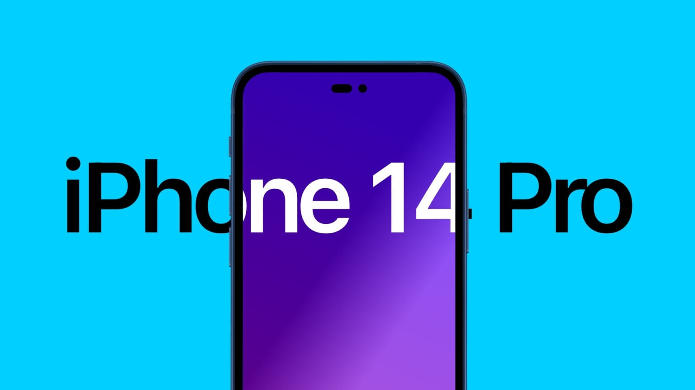

The iPhone 14 and iPhone 14 Plus[a] are smartphones designed, developed, and marketed by Apple Inc. They are the sixteenth generation of iPhones, succeeding the iPhone 13 and iPhone 13 Mini, and were announced at the Apple Event in Apple Park in Cupertino, California on September 7, 2022, alongside the higher-priced iPhone 14 Pro and iPhone 14 Pro Max flagships. The iPhone 14 and iPhone 14 Plus feature a 6.1-inch (15 cm) and 6.7-inch (17 cm) display, improvements to the rear-facing camera, and satellite connectivity. The iPhone 14 was made available on September 16, 2022 and iPhone 14 Plus was made available on October 7, 2022 respectively, and was launched with iOS 16.[4] Pre-orders for the iPhone 14 and iPhone 14 Plus began on September 9, 2022.[7] The iPhone 14 Plus replaces the iPhone 13 Mini in Apple’s lineup. It is the first iPhone to bring back the "Plus" moniker since the iPhone 8 Plus in 2017. iPhone 14 and 14 Plus models (as well as iPhone 14 Pro and iPhone 14 Pro Max models) sold in the United States drop support for physical SIM cards, making them the first iPhone models since the CDMA variant of the iPhone 4 to not come with a discrete SIM card reader.[8]
The iPhone 14 and iPhone 14 Plus have an identical design to the iPhone 13, although for the US models, the physical SIM tray is removed. The iPhone 14 and iPhone 14 Plus are available in five colors: Blue, Purple, Midnight, Starlight, and Product Red.[16] Purple is a new color replacing Pink used on the iPhone 13 and iPhone 13 Mini.
Hardware iPhone 14 and 14 Plus are available in three internal storage configurations: 128, 256, and 512 GB. It has 6 GB of RAM, an increase over the iPhone 13 and 13 mini model's 4 GB of RAM. The iPhone 14 and 14 Plus have the same IP68 rating for dust and water resistance as its predecessor.[3] Chipset The iPhone 14 and iPhone 14 Plus are equipped with the Apple A15 Bionic system on a chip, the same variant used on the 2021 iPhone 13 Pro and 13 Pro Max.[4] The iPhone 14 and 14 Plus feature a 6-core CPU, 5-core GPU, and 16-core Neural Engine.[3] Display The iPhone 14 features a 6.1-inch (15 cm) display with Super Retina XDR OLED technology at a resolution of 2532 × 1170 pixels and a pixel density of about 460 PPI with a refresh rate of 60Hz. The iPhone 14 Plus features a 6.7-inch (17 cm) display with the same technology at a resolution of 2778 × 1284 pixels and a pixel density of about 458 PPI. Both models have typical brightness up to 800 nits, and max brightness up to 1200 nits.[3] Cameras The iPhone 14 and 14 Plus feature the same camera system with three cameras: one front-facing camera (12MP f/1.9), and two back-facing cameras: a wide (12MP f/1.5) and ultra-wide (12MP f/2.4) camera, with the wide and front-facing cameras having a faster aperture than the iPhone 13. The front facing camera also has autofocus for the first time.[17] Battery The iPhone 14 provides 20 hours of video playback, while the Plus variant provides 26 hours of video playback.[3]